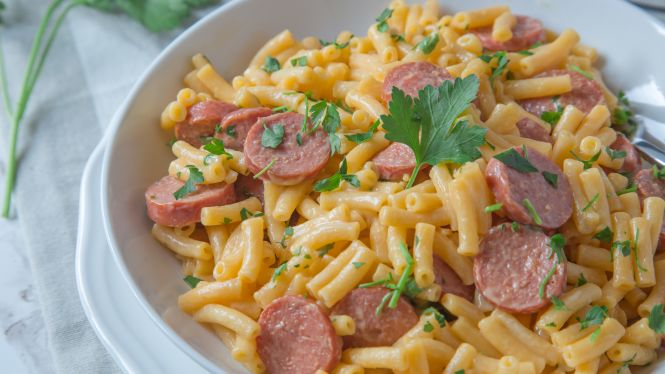

Mac and Cheese with Hotdogs

Description
This is a simple but tasty dish. All you need are some hotdogs and a box of Kraft Mac and Cheese for an easy meal that is sure to satisfy your belly! For some extra kick add some Texas Petes hot sauce... Yum!
Ingredients
- 1 box Kraft Mac and Cheese
- 1/4 cup of milk
- 5 TBSP of butter
- 2 hotdogs
Steps
- Follow the recipe on the Kraft Mac and Cheese box using the 1/4 cup of milk and 4 TBSP of butter
- Thinly slice two hotdogs
- Melt 1 TBSP of butter in pan over medium heat
- Add hotdog slices to pan making sure they are in one layer
- Be sure to brown both sides of the hotdog slices
- Once cooked, add hotdog slices to bowl of Mac and Cheese and mix it up
- Add hot sauce to taste
- Enjoy!